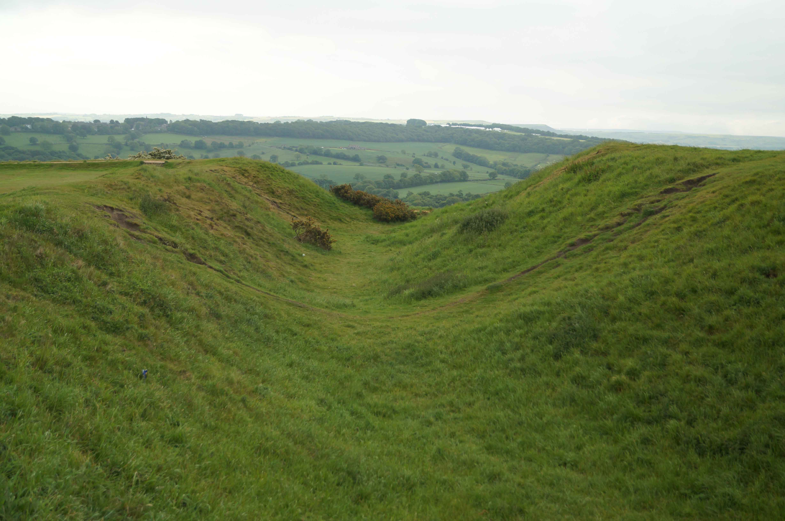
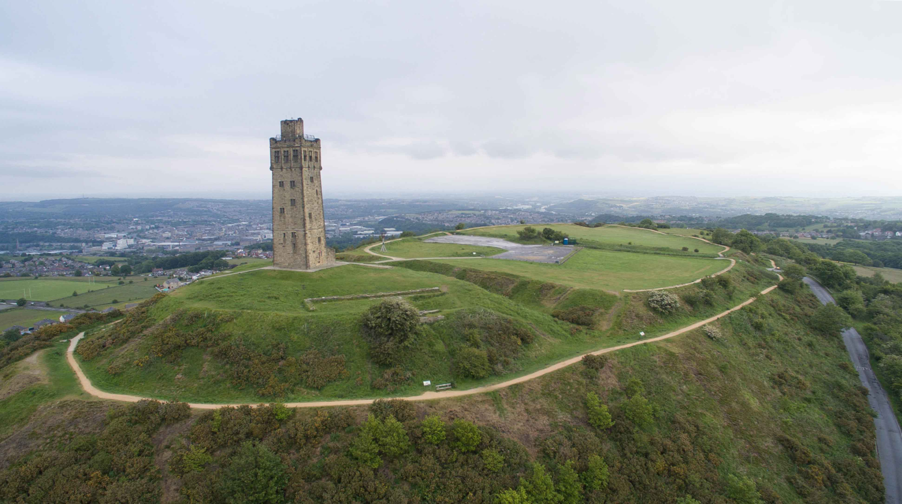
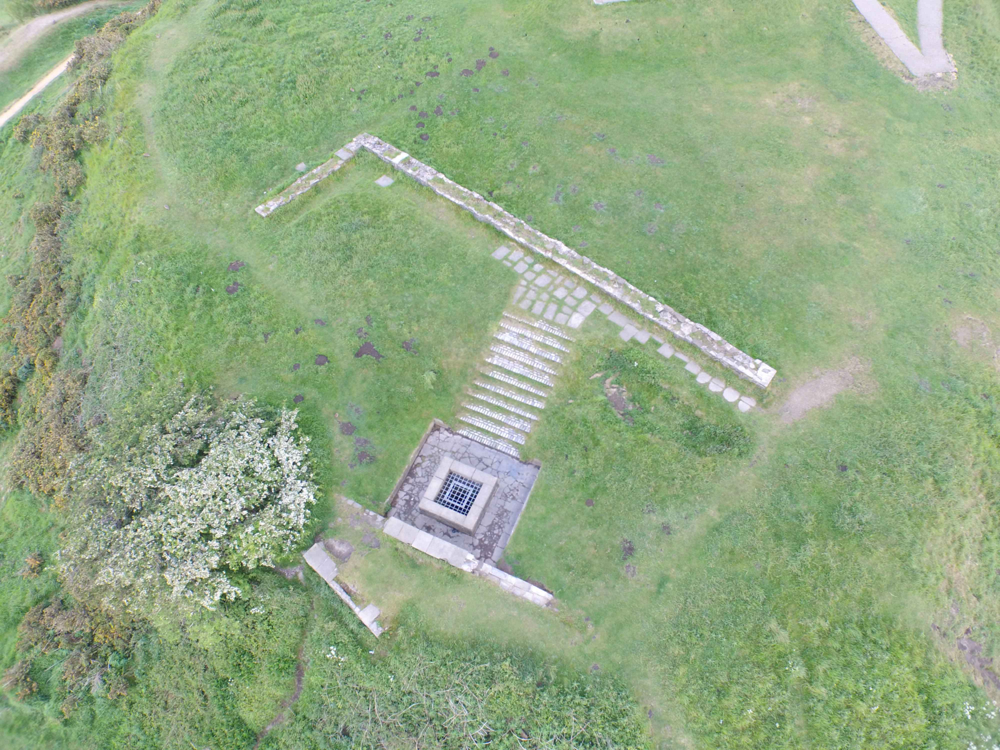
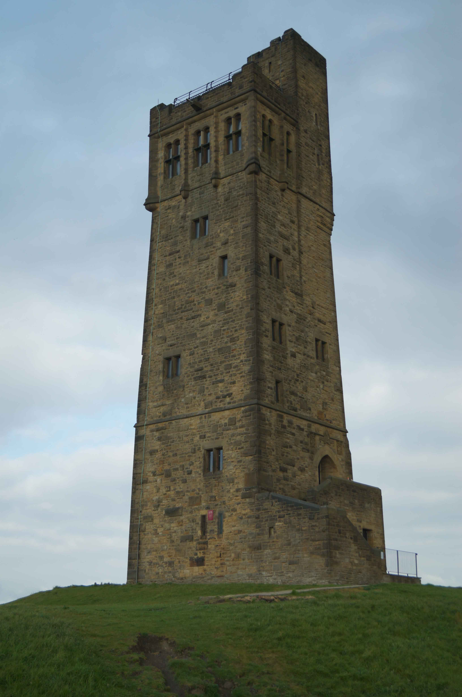
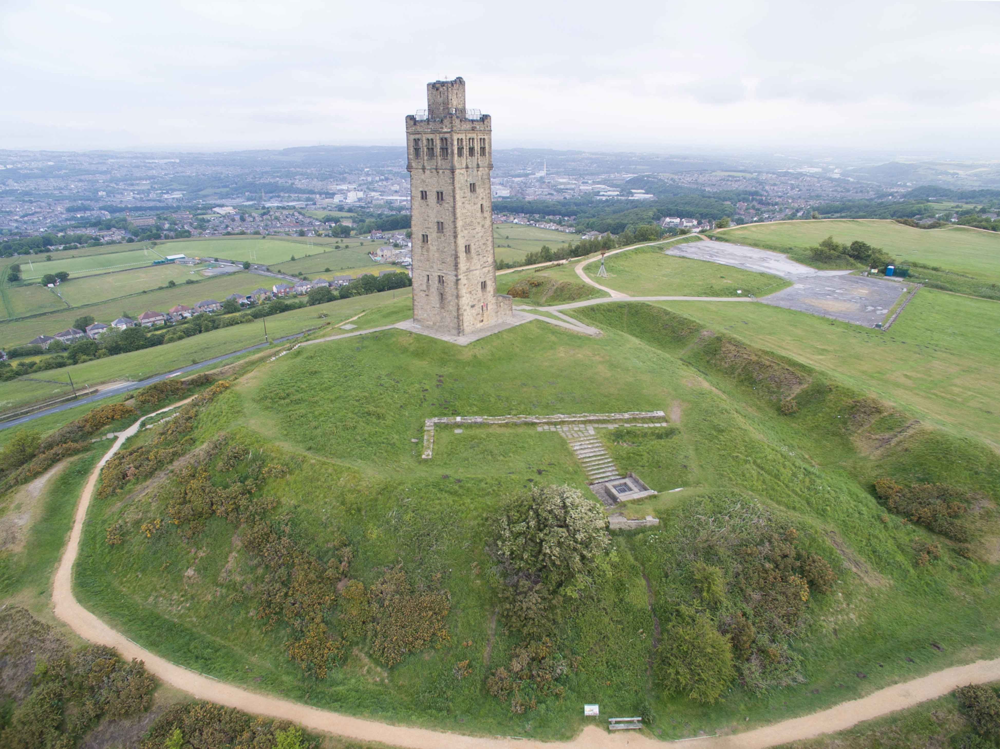
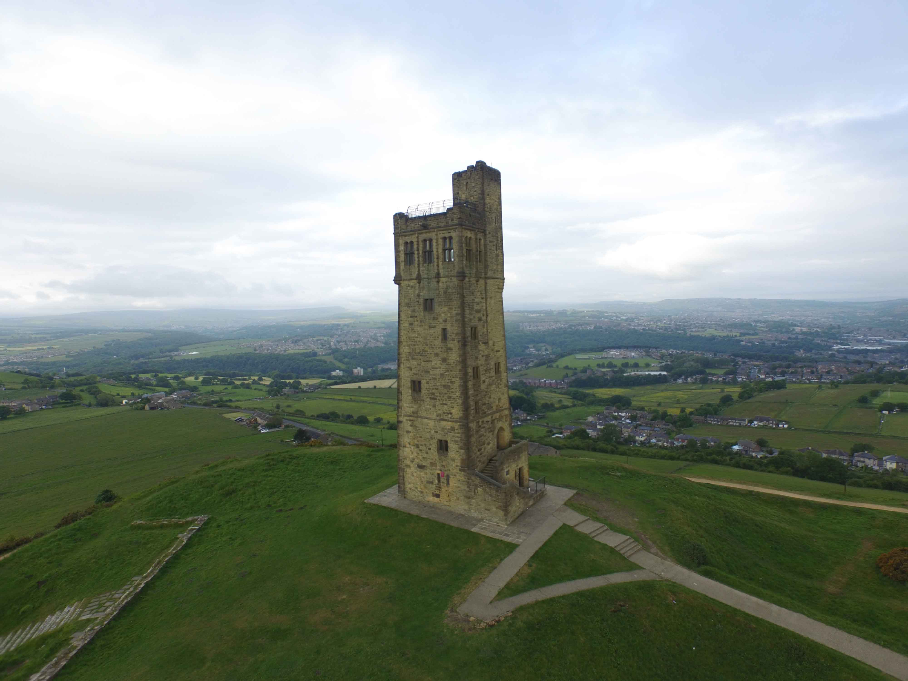
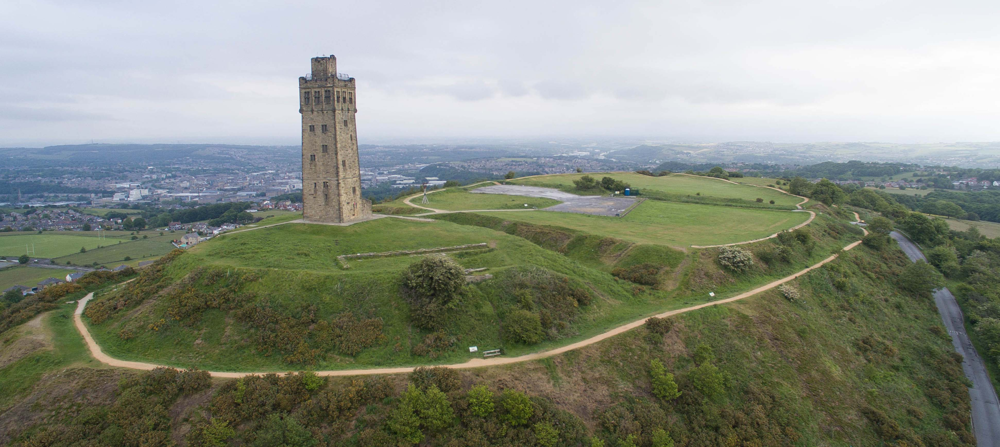

History
Castle Hill, Almondbury stands over 300 metres above sea level and dominates the Holme Valley just south of its confluence with the River Colne. The latter was a key artery of trade and communication since prehistoric times and connected the site to the Peak District, Lancashire and beyond. For this reason it has been occupied for thousands of years with the earliest settlers using the site during the Neolithic (4000 BC to 2500 BC) period. Use continued during the Bronze (2500 BC to 800 BC) then Iron (800 BC to AD 43) Ages and around the seventh century BC the site was first fortified with the construction of a single rampart enclosing an area of around 5 acres. This univallate hillfort was upgraded in the sixth century BC into a multivallate (multiple rampart) configuration when a ditch was dug external to the existing defences and the spoil used to create a new rampart. Further upgrades were made in the late sixth century BC with the addition of another ditch and the defences were also extended to the north-east effectively doubling the size of the original enclosure.
By the Fifth Century BC the hillfort was occupied by the Brigantes tribe and undoubtedly was an important site as substantial upgrades were made to the hillfort's defences. The main rampart was revetted in stone which was held in place with timber frames. An outwork, one of the earliest examples of its kind, replaced a simple in-turned entrance. The outer ditch was also enhanced and converted into a deep V-shaped trench. The site was once thought to have been Camulodunum , a tribal centre of the Brigantes tribe during the Roman-era that was mentioned in Ptolemy's Geography . However archaeological investigation has now confirmed the settlement was destroyed by fire circa-400 BC and was thereafter abandoned long before the Romans arrived. It remained unoccupied for the next 1,500 years.
Following the Norman Conquest, an earth and timber motte-and-bailey fortification was built by Ilbert de Lacy. He had been granted extensive lands in Lincolnshire, Nottinghamshire and Yorkshire with the latter including the Honour of Pontefract. Almondbury formed part of his estate and he constructed the castle as part of his efforts to secure control of the region. The proximity of the River Colne was probably the key factor here although building such a fortification within a former hill fort was unusual as, although such sites were naturally strong, they lacked the political impact of being built overlooking an existing settlement. The castle re-used the existing Iron Age earthworks but further ditches were excavated to create three separate enclosures for the motte and two baileys. The Outer Bailey was used for an associated settlement which grew up to serve the castle. King Stephen granted Henry de Lacy a licence to crenellate in the early-twelfth century and this probably reflected the partial rebuilding of the structure in stone.
The castle was abandoned in the late thirteenth century, probably due to its exposed and impractical location, and was reported as ruinous by 1320. Nevertheless the attached settlement continued and was still occupied in the fifteenth century. After the settlement was abandoned, Castle Hill remained unoccupied although the site's dominant position meant beacons were periodically placed here (including one to warn of the Spanish Armada). A public house was built on the hill in the nineteenth century and in 1897 a large folly, Victoria Tower, was built to celebrate Queen Victoria's Silver Jubilee. During WWII an anti-aircraft battery was installed on the site.
Bibliography
Berggren, J.L and Jones, A (2001). Ptolemy's Geography . Princeton University Press.
Brown, I (2009). Beacons in the Landscape: The Hillforts of England and Wales . Windgather Press, Oxford.
Creighton, O.H (2002). Castles and Landscapes: Power, Community and Fortification in Medieval England . Equinox, Bristol.
Douglas, D.C and Rothwell, H (ed) (1975). English Historical Documents Vol 3 (1189-1327) . Routledge, London.
Harding, D.W (1976). Hillforts. Later Prehistoric Earthworks in Britain and Ireland . Academic Press, London.
Historic England (2015). Castle Hill: slight univallate hillfort, small multivallate hillfort, motte and bailey castle and deserted village. Listing Number 1009846 . Historic England, London.
King, C.D.J (1983). Castellarium anglicanum: an index and bibliography of the castles in England, Wales and the Islands . Kraus International Publications.
Pryor, F (2010). The Making of the British Landscape . Penguin Books, London.
Varley, W.J (1976). A Summary of Excavations at Castle Hill Almondbury 1939-72 . Academic Press, London
What's There?
Castle Hill includes the earthworks of an Iron Age hillfort that were later extensively modified for a Norman motte-and-bailey fortification as well as medieval settlement. Today the site is dominated by a nineteenth century folly known as Victoria Tower. On a clear day there are spectacular views from the fort.
Almondbury . The Iron Age fort was a single enclosure but the Normans divided it into three separate wards. The motte was nearest to the camera and protected by the deepest ditches. Behind it was the Inner Bailey which would have housed the ancillary buildings along with the accommodation for the troops. The Outer Bailey evolved into the civilian settlement.
Water Well . The only masonry fragments of the Medieval Castle is the water well.
Victoria Tower . The Tower was built in 1897 to mark Queen Victoria's Silver Jubilee. It was opened on 24 June 1899 by Alfred Lumley, Earl of Scarbrough. Calls for it to be demolished during the Second World War, lest it be used as a navigation mark by enemy bombers, were clearly ignored!
England > Yorkshire
CASTLE HILL ALMONDBURY
Castle Hill at Almondbury has been the site of a settlement since around 2100 BC. Defences were built during the Iron Age starting with a single rampart but significant upgrades were made in the decades that followed. A fire gutted the site around 400 BC and it was then abandoned until the Normans built a motte-and-bailey in the eleventh century.
Gallery
Getting There
Castle Hill is found to the south of Huddersfield of Ashes Lane. The site is sign-posted and there is a car park on the summit.
Castle Hill Side, HD4 6TA
53.622850N 1.771261W
(c) Copyright CastlesFortsBattles.co.uk
Recovered original photographs, plans and images






